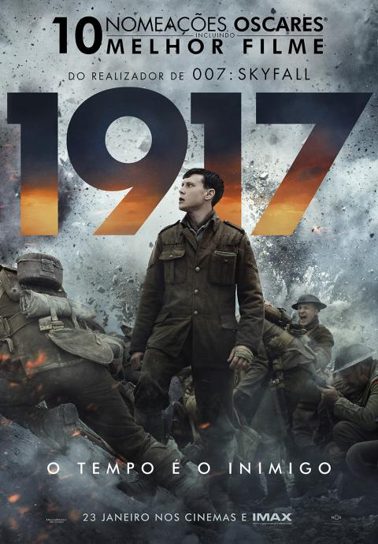

Filme 1: 1917
O enredo é relativamente simples: dois soldados ingleses precisam levar um recado para evitar que uma tropa aliada caia numa armadilha mortal. Milhares de vidas estão nas suas mãos. Para quem é fã de filmes de guerra, este longa, narrado quase em tempo real e com cenas de tirar o fôlego, é absolutamente imperdível! Foram nada menos que 10 indicações ao Oscar, incluindo melhor filme.